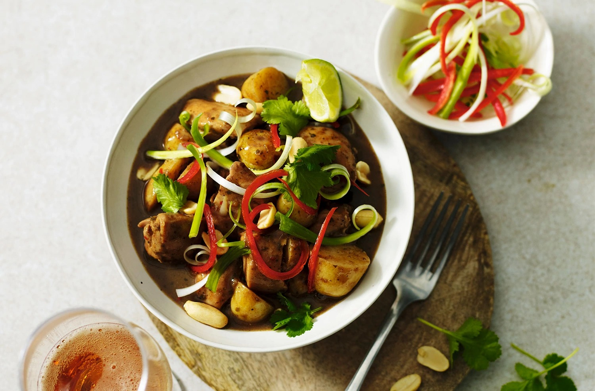

Chicken Massaman Curry

Description
This thai curry uses tender chicken, halved miniature potatoes, a fragranat curry paste and fresh chilli, corriander and lime.
It is served with soft, fluffy basmati rice.
Ingredients
- 400ml coconut milk
- 200ml chicken stock
- 100g massaman thai curry paste
- 1 cinnamon stick
- 6 chicken thigh fillets
- 300g miniature potatoes, halved
- 50g cashew nuts or peanuts
- 1 red chilli
- ½ x 28g pack fresh coriander, leaves only
- 2 salad onions, shredded
- cooked basmati rice, to serve
- 1 lime, cut into wedges
Cooking Steps
- Place the coconut milk, stock, curry paste and cinnamon stick in a large saucepan and bring to a simmer. Cut the chicken
into cubes and add to the pan with the potatoes. Cook gently for 20-25 minutes until the potatoes are tender and the chicken
is cooked through with no pink meat remaining.
- Meanwhile, toast the cashew nuts or peanuts in a small non-stick frying pan for 3-4 minutes until golden brown. Deseed the
chilli and slice it into long shreds. Set aside.
- Divide the curry among 4 bowls and scatter with the toasted nuts, coriander leaves, chilli and salad onions. Serve with
rice and lime wedges for squeezing over.